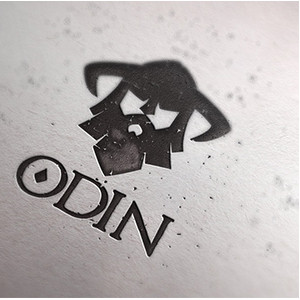
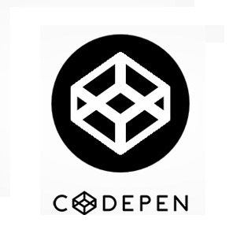
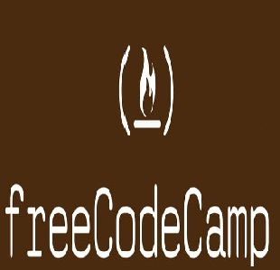

Andrew.j.galle
Progress
| 4/19/2017 | Today I started leaning into The Odin Project. I really liked FreeCodeCamp, and I think I'll keep at it, but I want to get out of the sandbox and start building tangible projects to stay motivated. So, today I created a Ubuntu dualboot environment and finished the install fest for Ruby, Rails, Sublime and what feels like a dozen more! After optimizing all that, I'm finally ready to dive into the command line and hopefully that'll make Git a little more approachable when I circle back around for it. |
| 4/18/2017 | Using some skills learned from FreeCodeCamp, I created this personal webpage which uses HTML5, CSS3, and Bootstrap. I also added a small amount of flair using FontAwesome. |
Portfolio
|  |  |  |
About

I am a Norfolk, Virginia resident currently learning Web Development. I've also been studying Japanese and look for every opportunity to use and improve it. As a result I've created this website to have an opportunity to combine both of my interests.
Every so often, I'll write a short journal entry to let you know where I've been and what I plan to tackle next. Unless stated otherwise, everything you see here is made from scratch. Thank you kindly for taking the time to review my work.
最近私は日記に書くことにしました。時々、私は短い日記を加えるつもりです。こんな風に、あなたは有能を分かることができました。それに、多分どこへ行く予定を学べます。
読んで呉れてありがとございました。
よろしくおねがします
ところで、ノーフォーク (バージニア州)にいたら、連絡してくれてお願いします！案内できます!
Contact
Please feel free to follow or contact me anytime.